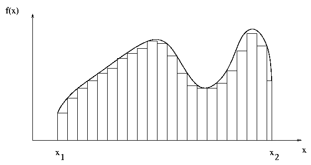

Joseph Sheedy
joseph.sheedy@gmail.com
Git repository: https://github.com/UWPCE-PythonCert/Python300-SystemDevelopmentWithPython-Fall-2014
Before we start building extensions, a quick review of building and packaging Python modules with distutils
write a setup.py script
from distutils.core import setup
setup(
name='add',
version='1.0',
description='Test description',
ext_modules=[],
py_modules=['add'],
)
python setup.py build_ext [--inplace]
python setup.py install
To keep focus on the integration tools, we're going to focus on integrating the following add() function into our Python application
#include <stdio.h>
int add(int x, int y) {
return x+y;
}
int main(void) {
int w = 0;
int q = 2;
printf("test\n");
printf("%d", add(w,q));
}
examples/pure-c you'll find a Makefile containing:
all: add; gcc -o add add.cNow compile it:
% make
And run it:
./add
3 + 2 = 5
Write your function in pure C using the Python API and import it into Python
Further reading
You may need to install a Python dev package on your system through your package manager
Pull in the Python API to your C code via
#include <Python.h>
/*
Note: Since Python may define some pre-processor definitions which affect the standard headers on some systems, you must include Python.h before any standard headers are included.
stdio.h, string.h, errno.h, and stdlib.h are included for you.
*/
Python isn't concerned with the type of arguments passed to a function, but C is
So function arguments must be parsed on the way in and the way out
On the way in, we can call PyArg_ParseTuple to parse the function arguments
if (!PyArg_ParseTuple(args, "s", &var1, ...))
return NULL;http://docs.python.org/2/c-api/arg.html#PyArg_ParseTuple
On the way out, we can call Py_BuildValue
PyObject* Py_BuildValue(const char *format, ...)
First, register the name and address of your function in the method table
static PyMethodDef AddMethods[] = {
{"add", add, METH_VARARGS, "add two numbers"},
{NULL, NULL, 0, NULL}
};
PyImport_AddModule("add");
Py_InitModule("add", AddMethods);That second record is a required Sentinel value
http://docs.python.org/2/c-api/structures.html#PyMethodDef
Now you're ready to initialize the Python environment with
Py_SetProgramName(char *name)
Py_Initialize()#include <Python.h>
static PyObject *
add(PyObject *self, PyObject *args)
{
int x;
int y;
int return_value;
if (!PyArg_ParseTuple(args, "ii", &x, &y))
return NULL;
return_value = x+y;
return Py_BuildValue("i", return_value);
}
static PyMethodDef AddMethods[] = {
{"add", add, METH_VARARGS, "add two numbers"},
{NULL, NULL, 0, NULL}
};
void initadd(void) {
PyImport_AddModule("add");
Py_InitModule("add", AddMethods);
}
int main(int argc, char *argv[]) {
Py_SetProgramName(argv[0]);
Py_Initialize();
initadd();
return 0;
}Now let's build our module with distutils
Simple compilation details are handled by distutils
python setup.py build_ext --inplaceOr to install into your virtualenv:
python setup.py installNow you can "import add; add.add(2,4)" from your Python code
Try it now
Try modifying the C code:
Major errors in your C code won't magically turn into Python exceptions
You have to detect error conditions and call the proper functions
there is a global indicator (per thread) of the last error that occurred. Most functions don’t clear this on success, but will set it to indicate the cause of the error on failure.
Most functions also return an error indicator, usually NULL if they are supposed to return a pointer, or -1 if they return an integer (exception: the PyArg_*() functions return 1 for success and 0 for failure)
The easy way to set this indicator is with PyErr_SetString
Find the divide module in the examples/c-api directory
What happens when you call divide.divide(1/0)?
This is a different result than a pure Python 1/0, which throws an exception
Change the divide method to throw an appropriate exception in the divide-by-zero case
Hint: detect the error condition, call PyErr_SetString(PyExc_ZeroDivisionError, "DIVIDE BY ZERO ERROR"), and return NULL
A language agnostic tool for integrating C/C++ code with high level languages
Advantages
Further reading
SWIG doesn't require modification to your C source code
The language interface is defined by an "interface file", usually with a suffix of .i
From there, SWIG can generate interfaces for the languages it supports
The interface file contains ANSI C prototypes and variable declarations
The %module directive defines the name of the module that will be created by SWIG
To create a SWIG wrapper:
python -c 'import add;print add.add(4,5)'http://www.swig.org/Doc2.0/SWIGDocumentation.html#Introduction_nn5
SWIG will create interfaces for all supported languages
ruby extconf.rb
swig -ruby add.i
make
ruby -e 'require "add"; print Add.add(5,6).to_s + "\n"'
Further reading
A foreign function interface in Python
Binds functions in shared libraries to Python functions
from ctypes import *
add = cdll.LoadLibrary("add.so")
print add.add(3,4)Further reading
None, integers, longs, byte strings and unicode strings are the only native Python objects that can directly be used as parameters in these function calls.
The rest must be wrapped in a ctypes data type
For instance, floats can be wrapped in c_double() before handing off to ctypes
printf("An int %d, a double %f\n", 1234, c_double(3.14))You can allow your own classes to be passed to ctypes via the _as_parameter_ instance variable, as long as they can be resolved to an integer or string.
class MyObject(object):
def __init__(self, number):
self._as_parameter_ = number
obj = MyObject(32)
printf("object value: %d\n", obj)http://docs.python.org/2/library/ctypes.html#fundamental-data-types
Passing Python objects into C functions
If a function expects a pointer, just wrap your Python object in byref(x)
a_lib.a_function( ctypes.byref(c_float(x)))http://docs.python.org/2/library/ctypes.html#passing-pointers-or-passing-parameters-by-reference
For callback functions, use a factory that returns function prototypes:
ctypes.CFUNCTYPE(restype, *argtypes, use_errno=False, use_last_error=False)
See examples/ctypes/pointers.py and examples/ctypes/ctypes_test.py
http://docs.python.org/2/library/ctypes.html#ctypes.CFUNCTYPE
You can define C structs by subclassing ctypes.Structure:
class POINT(ctypes.Structure):
_fields_ = [("x", ctypes.c_int),
("y", ctypes.c_int)]
point = POINT(10, 20)
print point.x, point.y
point = POINT(y=5)
print point.x, point.y
ctypes allows you to call shared libraries:
Supports almost all of C:
Upside:
Downsides:
In examples/ctypes you’ll find add.c
You can build a shared lib with it with make
ctypes_test.py will call that shared library, and a few system library functions.
Take a look at what’s there, and how it works.
add another function, divide, to add.c, that accepts and returns floats
rebuild, and call it with ctypes
Cython is a Python-like language
Allows definition of static types via new keywords
Cython code compiles down to Python extensions written in C
To type a variable, add the cdef keyword:
def add(int x, int y):
cdef int result=0
result = x + y
return resultFurther reading
first, install cython with "pip install cython"
Cython files end in the .pyx extension
Cython functions can be declared two ways:
Once your .pyx file is created, it is converted to C via
cython cy_add.pyxGenerate "annoted" C code in HTML
cython -a cy_add.pyxBuilding your Python extension with distutils is similar to before, but use 'cythonize'
from distutils.core import setup
from Cython.Build import cythonize
setup(name = "cython_example",
ext_modules = cythonize(['cy_add1.pyx',])
)Then you're ready to build:
python setup.py build_ext [--inplace]See examples/cython/setup.py
cdef int i
def double dx
Now i and dx are statically typed. Do this for variables which are heavily used and profiling has shown you that they are expensive.
Typing everything in sight will not necessarily improve performance. It may even harm it, as there may be unnecessary type checks or conversions
Consider a more expensive numerical integration function

def f(x):
return x**2
def integrate_f(a, b, N):
s = 0
dx = (b-a)/N
for i in range(N):
s += f(a+i*dx)
return s * dx
For example, integrating this function from 0 to 10 results in 333.333...
This is a good candidate for Cython – an essentially static function called a lot.
http://www.wolframalpha.com/input/?i=integrate+x**2+from+0+to+10
You can tell Cython about external functions you want to call with 'cdef extern':
# distutils: sources = add.c
# This tells cythonize that you need that c file.
# telling cython what the function we want to call looks like.
cdef extern from "add.h":
# pull in C add function, renaming to c_add for Cython
int c_add "add" (int x, int y)
def add(x, y):
# now that cython knows about it -- we can just call it.
return c_add(x, y)
There are several other ways to work with C code. We'll say a passing hello to them.
http://wiki.python.org/moin/Pyrex
Superceded by Cython
XDress is an automatic wrapper generator for C/C++ written in pure Python. Currently, xdress may generate Python bindings (via Cython) for C++ classes and functions and in-memory wrappers for C++ standard library containers (sets, vectors, maps). In the future, other tools and bindings will be supported.
http://www.boost.org/doc/libs/1_41_0/libs/python/doc/index.html
A C++ library which interfaces Python and C++
Wraps C++ functions in BOOST wrappers, compiled with your regular C++ compiler
https://code.google.com/p/shedskin/
A pure python compiler that makes type assumptions based on type inference
Experimental, but growing
http://wiki.python.org/moin/IntegratingPythonWithOtherLanguages
Are you calling a few system library calls? - ctypes
Want your code to be included in the standard CPython library? - CPython API
Do you have a really big library to wrap?
use a wrapper generator: - SWIG, XDress, ..
Are you writing extensions from scratch? - Cython
Using C++ or Boost already? - Boost-Python
Do you want a “thick” wrapper around a C/C++ lib - Cython
Want some easy speed and can use an alternative interpreter? - try http://pypy.org
/